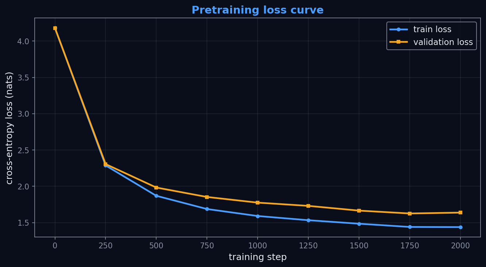

<!-- .slide: id="title" class="section-divider" data-state="is-section-divider" --> # LLMs 0 to 100 Module 5: Pretraining --- <!-- .slide: id="review-1" --> ## Review: From Module 4 <div class="slide-columns" style="grid-template-columns: repeat(2, 1fr); gap: 34px;"> <div> **The machinery we built** - Text is tokenized, embedded, and run through a stack of decoder blocks - The model outputs **logits**: one score per vocabulary token, at every position - A decoding strategy (greedy, temperature, top-k, top-p) turns logits into the next token - Architecture is the **shape** of the computation, not the **weights** </div> <div> **The question this module answers** - A fresh transformer has random weights, so its output is noise - **Pretraining** turns random weights into useful ones - The only input: raw text </div> </div> --- <!-- .slide: id="review-2" --> ## Review: Two Ideas We Reuse <div class="slide-columns" style="grid-template-columns: repeat(2, 1fr); gap: 34px;"> <div> **Causal masking (Module 3 and 4)** - Each position attends only to itself and earlier positions - So every position predicts the **next** token without seeing the answer - One sequence = many prediction problems at once </div> <div> **Cross-entropy (Module 2)** The same loss that trained the classifier: $$\mathcal{L} = -\log p_\theta(\text{true next token})$$ Goal: assign **high probability to the token that actually comes next**. </div> </div> <div class="note"> Causal masking + cross-entropy is the whole idea. The rest of the module — data pipelines, schedules, scaling laws, distributed training — is the engineering that makes it work at scale. </div> --- <!-- .slide: id="divider-what" class="section-divider" data-state="is-section-divider" --> # What Pretraining Is Learning the structure of language from raw text --- <!-- .slide: id="self-supervised" --> ## Self-Supervised Learning Pretraining: learn from broad raw text **before** specializing for any task. <div class="slide-columns" style="grid-template-columns: repeat(2, 1fr); gap: 34px;"> <div> **Supervised learning** - Humans label the data: image "cat", review "positive" - Labels are expensive and scarce </div> <div> **Self-supervised learning** - The label is already in the text: the **next token** - No human annotation - A sequence of length $T$ yields $T$ training examples </div> </div> Free supervision is why pretraining can consume trillions of tokens. --- <!-- .slide: id="base-model" --> ## The Result Is a Base Model <div class="stage-flow"> <svg viewBox="0 0 900 150" role="img" aria-label="Raw text becomes a base model through pretraining; the base model becomes an instruct model through finetuning"><defs><marker id="sf" markerWidth="8" markerHeight="8" refX="6" refY="3" orient="auto"><path d="M0,0 L6,3 L0,6 Z" fill="#f5a623"></path></marker><marker id="sg" markerWidth="8" markerHeight="8" refX="6" refY="3" orient="auto"><path d="M0,0 L6,3 L0,6 Z" fill="#8892a4"></path></marker></defs><rect x="20" y="50" width="180" height="56" rx="10" fill="rgba(74,158,255,0.10)" stroke="rgba(74,158,255,0.5)" stroke-width="1.4"></rect><text x="110" y="76" text-anchor="middle" font-size="16" fill="#e8eaf0">raw text</text><text x="110" y="95" text-anchor="middle" font-size="12" fill="#8892a4">web, books, code</text><line x1="206" y1="78" x2="354" y2="78" stroke="#f5a623" stroke-width="2.5" marker-end="url(#sf)"></line><text x="282" y="66" text-anchor="middle" font-size="15" fill="#f5a623">pretraining</text><text x="282" y="98" text-anchor="middle" font-size="11" fill="#8892a4">next-token, at scale</text><rect x="360" y="50" width="180" height="56" rx="10" fill="rgba(63,185,80,0.12)" stroke="rgba(63,185,80,0.6)" stroke-width="1.6"></rect><text x="450" y="76" text-anchor="middle" font-size="16" fill="#e8eaf0">base model</text><text x="450" y="95" text-anchor="middle" font-size="12" fill="#8892a4">this module</text><line x1="546" y1="78" x2="694" y2="78" stroke="#8892a4" stroke-width="2.5" stroke-dasharray="5 4" marker-end="url(#sg)"></line><text x="622" y="66" text-anchor="middle" font-size="15" fill="#8892a4">finetuning</text><text x="622" y="98" text-anchor="middle" font-size="11" fill="#8892a4">Module 6</text><rect x="700" y="50" width="180" height="56" rx="10" fill="rgba(136,146,164,0.10)" stroke="rgba(136,146,164,0.45)" stroke-width="1.4"></rect><text x="790" y="76" text-anchor="middle" font-size="16" fill="#8892a4">instruct model</text><text x="790" y="95" text-anchor="middle" font-size="12" fill="#8892a4">follows instructions</text></svg> </div> - Boxes: **states of the weights**. Arrows: **training processes** - A base model knows grammar, facts, style, and code patterns - It is **not** yet a helpful assistant — that is finetuning (Module 6) --- <!-- .slide: id="why-enough" --> ## "Just" Predicting the Next Token To push the loss lower, the model must learn everything that makes text predictable: <div class="slide-columns" style="grid-template-columns: repeat(2, 1fr); gap: 30px;"> <div> - **Grammar and syntax** — to keep sentences well-formed - **Facts about the world** — "the capital of France is ___" - **Style and register** — legal text, poetry, code comments </div> <div> - **Code structure** — balanced brackets, valid identifiers - **Task formats** — question/answer, translation, summaries - **Implicit reasoning** — arithmetic, deduction, multi-step chains </div> </div> One simple objective + enormous diverse data = broad capability. --- <!-- .slide: id="few-shot" --> ## A Striking Side Effect: In-Context Learning A large enough base model infers a task from **examples in the prompt**: <div class="slide-columns" style="grid-template-columns: repeat(2, 1fr); gap: 30px;"> <div> ```text sea -> mer sky -> ciel cat -> chat dog -> ``` </div> <div> - The model was only trained to continue text - It continues the **pattern** and answers `chien` - This is **few-shot / in-context learning** - Emergent from scale, not explicitly trained </div> </div> <div class="note"> Nobody designed a "few-shot mode" into the objective; it appears for free at scale. More on prompting in Module 10. </div> --- <!-- .slide: id="divider-objective" class="section-divider" data-state="is-section-divider" --> # The Training Objective Causal language modeling, and the alternatives --- <!-- .slide: id="causal-lm" --> ## Causal Language Modeling The GPT-style objective: predict token $x_t$ from the tokens before it. The training pair is the **same sequence, shifted by one**: <div class="slide-columns" style="grid-template-columns: repeat(2, 1fr); gap: 30px;"> <div> **input** $x$ $$x_0,\ x_1,\ \ldots,\ x_{T-1}$$ </div> <div> **target** $y$ $$x_1,\ x_2,\ \ldots,\ x_{T}$$ </div> </div> - One logit vector at **every** position: $T$ predictions, $T$ loss terms per sequence - Labels are free: just shift --- <section id="next-token-anim"> <div class="video-container"> <video class="manim-stepper" data-manim-scene="next-token" preload="auto"></video> </div> </section> --- <!-- .slide: id="objective-equation" --> ## The Cross-Entropy Objective Minimize the average negative log-probability of the true next token: $$\mathcal{L} = -\frac{1}{T}\sum_{t=1}^{T}\log p_\theta\left(x_t \mid x_{<t}\right)$$ This is **cross-entropy** against the true next token, averaged over every position. <div class="slide-columns" style="grid-template-columns: repeat(3, 1fr); gap: 20px;"> <div> **loss** (nats) the raw objective above </div> <div> **perplexity** $$\exp(\mathcal{L})$$ the effective number of choices </div> <div> **bits per token** $$\mathcal{L} / \ln 2$$ Shannon's units (Module 1) </div> </div> Three units, one quantity. Detail in a few slides. --- <div class="figure-card">  <div class="figure-info"> ## Alec Radford <!-- .element: class="fragment fade-in" --> <div class="fragment fade-in"> ### Improving Language Understanding by Generative Pre-Training (2018) - Led the GPT line of generative pretraining at OpenAI - Showed that a single decoder trained only to predict the next token transfers to many tasks - GPT-2 (2019) made large-scale causal language modeling the dominant recipe </div> </div> </div> --- <!-- .slide: id="other-objectives" --> ## Other Pretraining Objectives Two alternatives change **which tokens are predicted from which context**: <div class="slide-columns" style="grid-template-columns: repeat(2, 1fr); gap: 30px;"> <div> **Masked language modeling (BERT)** - Hide ~15% of tokens; predict them from **both sides** - Builds rich bidirectional representations - Not a natural generator; only masked positions give signal </div> <div> **Denoising / span corruption (T5)** - Corrupt a passage (drop or shuffle spans) - Train an encoder-decoder to **reconstruct** it - Flexible "text-to-text", but heavier machinery </div> </div> --- <div class="figure-card">  <div class="figure-info"> ## Devlin, Chang, Lee, and Toutanova <!-- .element: class="fragment fade-in" --> <div class="fragment fade-in"> ### BERT: Pre-training of Deep Bidirectional Transformers (2018) - Introduced masked language modeling as the reference point for bidirectional pretraining - Each masked position is predicted from left and right context at once - Excellent for understanding tasks; not designed for open-ended generation </div> </div> </div> --- <!-- .slide: id="why-causal-won" --> ## Why Decoder-Only Causal LM Won <div class="slide-columns" style="grid-template-columns: repeat(2, 1fr); gap: 30px;"> <div> - **Dense signal.** Every position is a prediction: $T$ examples per sequence. MLM learns only from the ~15% it masks. - **Trivial data construction.** Input and target are the same stream, shifted by one. </div> <div> - **Natural generation.** The objective *is* generation: sample, append, repeat. - **Prompt compatibility.** Classification, translation, and Q&A all become text completion. </div> </div> --- <!-- .slide: id="side-quest-compression" --> ## Side Quest: Compression Is Prediction A model that predicts text well is a good **compressor**: encoding the next token takes about $-\log_2 p(\text{token})$ bits. <div class="slide-columns" style="grid-template-columns: repeat(2, 1fr); gap: 30px;"> <div> - Shannon's through-line from Module 1: **cross-entropy, perplexity, and bits per token** measure compression - Lower loss = fewer bits per token = tighter description of the data </div> <div> - Minimizing loss and maximizing compression are the **same objective** - Ilya Sutskever frames next-token prediction as compression; the **Hutter Prize** rewards compressing Wikipedia; DeepMind's **"Language Modeling Is Compression"** (2023) makes the equivalence precise </div> </div> --- <!-- .slide: id="divider-pipeline" class="section-divider" data-state="is-section-divider" --> # The Pretraining Pipeline From a pile of text to a stream of training batches --- <!-- .slide: id="pipeline-overview" --> ## The Pipeline End to End <div class="pipeline-flow"> <svg viewBox="0 0 940 130" role="img" aria-label="Pretraining pipeline: collect, filter, tokenize, pack, split, train and evaluate"><defs><marker id="pf" markerWidth="8" markerHeight="8" refX="6" refY="3" orient="auto"><path d="M0,0 L6,3 L0,6 Z" fill="#f5a623"></path></marker></defs><rect x="8" y="44" width="128" height="50" rx="9" fill="rgba(74,158,255,0.10)" stroke="rgba(74,158,255,0.5)" stroke-width="1.4"></rect><text x="72" y="66" text-anchor="middle" font-size="15" fill="#e8eaf0">collect</text><text x="72" y="83" text-anchor="middle" font-size="11" fill="#8892a4">web, books, code</text><line x1="140" y1="69" x2="166" y2="69" stroke="#f5a623" stroke-width="2.5" marker-end="url(#pf)"></line><rect x="170" y="44" width="128" height="50" rx="9" fill="rgba(74,158,255,0.10)" stroke="rgba(74,158,255,0.5)" stroke-width="1.4"></rect><text x="234" y="66" text-anchor="middle" font-size="15" fill="#e8eaf0">filter</text><text x="234" y="83" text-anchor="middle" font-size="11" fill="#8892a4">clean, dedup</text><line x1="302" y1="69" x2="328" y2="69" stroke="#f5a623" stroke-width="2.5" marker-end="url(#pf)"></line><rect x="332" y="44" width="128" height="50" rx="9" fill="rgba(74,158,255,0.10)" stroke="rgba(74,158,255,0.5)" stroke-width="1.4"></rect><text x="396" y="66" text-anchor="middle" font-size="15" fill="#e8eaf0">tokenize</text><text x="396" y="83" text-anchor="middle" font-size="11" fill="#8892a4">text to IDs</text><line x1="464" y1="69" x2="490" y2="69" stroke="#f5a623" stroke-width="2.5" marker-end="url(#pf)"></line><rect x="494" y="44" width="128" height="50" rx="9" fill="rgba(74,158,255,0.10)" stroke="rgba(74,158,255,0.5)" stroke-width="1.4"></rect><text x="558" y="66" text-anchor="middle" font-size="15" fill="#e8eaf0">pack</text><text x="558" y="83" text-anchor="middle" font-size="11" fill="#8892a4">fixed blocks</text><line x1="626" y1="69" x2="652" y2="69" stroke="#f5a623" stroke-width="2.5" marker-end="url(#pf)"></line><rect x="656" y="44" width="128" height="50" rx="9" fill="rgba(74,158,255,0.10)" stroke="rgba(74,158,255,0.5)" stroke-width="1.4"></rect><text x="720" y="66" text-anchor="middle" font-size="15" fill="#e8eaf0">split</text><text x="720" y="83" text-anchor="middle" font-size="11" fill="#8892a4">train / val</text><line x1="788" y1="69" x2="814" y2="69" stroke="#f5a623" stroke-width="2.5" marker-end="url(#pf)"></line><rect x="818" y="44" width="116" height="50" rx="9" fill="rgba(245,166,35,0.12)" stroke="rgba(245,166,35,0.6)" stroke-width="1.6"></rect><text x="876" y="66" text-anchor="middle" font-size="15" fill="#e8eaf0">train</text><text x="876" y="83" text-anchor="middle" font-size="11" fill="#8892a4">and evaluate</text></svg> </div> Most of the work happens **before** the optimizer runs. Data decisions shape the model as much as architecture does. --- <!-- .slide: id="collect-filter" --> ## Collect, Then Filter <div class="slide-columns" style="grid-template-columns: repeat(2, 1fr); gap: 34px;"> <div> **Collect** - Web pages, books, code, papers, forums, documentation - The mixture depends on the model's goals and on legal and ethical constraints </div> <div> **Filter** Raw text is mostly junk. Remove: - Boilerplate and low-quality pages - Near-duplicate documents (deduplication) - Unsafe content categories and private information - Obvious benchmark leakage, where it can be found </div> </div> Quality and deduplication beat raw volume (more in the data-quality section). --- <!-- .slide: id="tokenize-pack" --> ## Tokenize and Pack The Module 4 tokenizer turns strings into IDs. Packing turns IDs into fixed-length blocks: - Documents vary in length; the GPU wants uniform `(batch, block)` tensors - Concatenate documents into one long stream, chop into equal blocks - Mark document boundaries with **special tokens** <div class="note"> **Special tokens** are reserved vocabulary IDs that never come from ordinary text: **BOS** marks document start, **EOS** the end (GPT-2 uses one token, `<|endoftext|>`, for both). They teach the model that context resets at a boundary. Sampling EOS at generation time means "I am done." </div> --- <section id="packing-anim"> <div class="video-container"> <video class="manim-stepper" data-manim-scene="sequence-packing" preload="auto"></video> </div> </section> --- <!-- .slide: id="split-train-eval" --> ## Split, Train, Evaluate <div class="slide-columns" style="grid-template-columns: repeat(2, 1fr); gap: 34px;"> <div> **Hold out a validation set** - Split into train and validation **before** reporting metrics - Validation loss then measures generalization, not memorized batches </div> <div> **Train in batches** Each step is the same four moves: 1. Forward pass on a batch 2. Shifted-target cross-entropy loss 3. Backpropagation 4. Optimizer update </div> </div> Measure validation loss periodically to check the model generalizes beyond the batches it just saw. --- <!-- .slide: id="divider-recipe" class="section-divider" data-state="is-section-divider" --> # The Training Recipe The engineering that keeps a long run stable --- <!-- .slide: id="recipe-intro" --> ## One Loop, Repeated - Module 2 gave the core: SGD, Adam, mini-batches, learning rates - Pretraining adds a few standard choices that keep **long, large** runs stable - The loop never changes: forward, loss, backward, update — millions of times --- <section id="training-loop-anim"> <div class="video-container"> <video class="manim-stepper" data-manim-scene="training-loop" preload="auto"></video> </div> </section> --- <!-- .slide: id="adamw" --> ## AdamW: The Standard Optimizer **AdamW** = Adam's adaptive step sizes + **decoupled weight decay**. <div class="slide-columns" style="grid-template-columns: repeat(2, 1fr); gap: 34px;"> <div> **Adam part** - Running averages of the gradient and its square - Each parameter gets its own effective learning rate - Robust to the very different gradient scales in a deep model </div> <div> **Weight-decay part** - Pulls weights toward zero each step (regularization, Module 2) - "Decoupled": applied directly to the weights, separate from the adaptive gradient term - Works better in practice </div> </div> --- <!-- .slide: id="lr-schedule" --> ## Learning-Rate Schedule: Warmup, Then Cosine Decay <div class="slide-columns" style="grid-template-columns: repeat(2, 1fr); gap: 34px;"> <div> **Warmup** - Start near zero, ramp up over the first few hundred steps - Early weights are random and gradients large; small steps avoid a blow-up </div> <div> **Cosine decay** - After the peak, decay smoothly to a small floor - Big steps early to explore, small steps late to settle </div> </div> --- <section id="lr-anim"> <div class="video-container"> <video class="manim-stepper" data-manim-scene="lr-schedule" preload="auto"></video> </div> </section> --- <!-- .slide: id="stability-tricks" --> ## Stability and Scale <div class="slide-columns" style="grid-template-columns: repeat(3, 1fr); gap: 20px;"> <div> **Gradient clipping** - Cap the global gradient norm - One bad batch cannot wreck the weights - Prevents loss spikes </div> <div> **Gradient accumulation** - Sum gradients over several small batches before stepping - Simulates a larger **effective** batch than one GPU holds </div> <div> **Mixed precision** - Most math in `bf16`, not `fp32` - Fewer bits = faster compute, larger models in memory - More in Module 9 </div> </div> --- <!-- .slide: id="overfit-check" --> ## Sanity Check: Overfit One Batch Before a long run, train repeatedly on a **single batch**. <div class="slide-columns" style="grid-template-columns: repeat(2, 1fr); gap: 34px;"> <div> **Why it works** - Any model with enough capacity can memorize one tiny batch - Its loss should crater toward zero </div> <div> **What it catches** - Loss does not crater = broken loop - Detached gradient, wrong target shift, frozen parameter, bad learning rate - Cheap to run, fails loudly </div> </div> The exercise runs exactly this check. --- <!-- .slide: id="divider-loss" class="section-divider" data-state="is-section-divider" --> # Reading the Loss Loss, perplexity, and what progress looks like --- <!-- .slide: id="loss-intro" --> ## Cross-Entropy Measures Surprise Loss = the model's average **surprise** at the true next token. Lower loss = more probability on what actually came next. The same number wears three hats: - **loss** in nats, the raw objective - **perplexity** $= \exp(\text{loss})$, the effective number of next-token choices - **bits per token** $= \text{loss} / \ln 2$, the compression view from Module 1 <div class="note"> A **nat** is the natural-log sibling of the bit: $\ln$ instead of $\log_2$. PyTorch's `log` is natural, so raw loss comes out in nats. One nat $= 1/\ln 2 \approx 1.44$ bits. </div> --- <section id="perplexity-anim"> <div class="video-container"> <video class="manim-stepper" data-manim-scene="perplexity" preload="auto"></video> </div> </section> --- <!-- .slide: id="progress-curves" --> ## What Progress Looks Like <div class="loss-figure"> <p></p> </div> - Both curves should fall - A **widening gap** = memorizing the training set, not learning reusable patterns - This curve is real output from the Module 5 exercise --- <!-- .slide: id="runs-are-messy" --> ## Real Runs Are Messy <div class="slide-columns" style="grid-template-columns: repeat(2, 1fr); gap: 34px;"> <div> **Spikes and divergence** - Long runs can spike or diverge - Usual suspects: learning rate too high, weak clipping, batch size, a bad data shard </div> <div> **Loss is not the whole story** - Lower loss does not perfectly predict every capability - Real runs also track **downstream benchmarks** at checkpoints - Generated samples build intuition, but are not a metric </div> </div> --- <!-- .slide: id="before-after-demo" --> ## The Demo: Before vs After Same model, before and after training. Both samples are real output from the exercise's tiny character-level model. <div class="slide-columns" style="grid-template-columns: repeat(2, 1fr); gap: 30px;"> <div> **Before** (random weights, loss 4.18) ```text -pzlYaS ;czdeCpwEiT,YzrzlG3-aYeNB ijbo Lzzj$KUKS-A.U FisdJ'G HTobPPW;,Ue$ ``` </div> <div> **After** (2000 steps, val loss 1.64) ```text FRIAR LAURENCE: What do tongue the cLARENCE: Your felsed hath you seed heart of me. ``` </div> </div> - Still nonsense up close, but it learned the **shape**: names in caps, colons, line breaks, plausible letters - Perplexity: ~65 to ~5. Bits per token: ~6.0 to ~2.4 --- <!-- .slide: id="divider-data" class="section-divider" data-state="is-section-divider" --> # Data Quality, Contamination, Memorization Pretraining data is a design decision, not neutral infrastructure --- <!-- .slide: id="more-not-better" --> ## More Data Is Not Automatically Better Beyond a point, **what** you train on matters more than how much: <div class="slide-columns" style="grid-template-columns: repeat(2, 1fr); gap: 34px;"> <div> - **Quality** — a smaller corpus of clean text can beat a larger pile of boilerplate and spam - **Diversity** — many domains and styles generalize better than one repeated genre </div> <div> - **Deduplication** — removing near-duplicates improves generalization, even though it removes tokens - **Domain balance** — the ratio of code, prose, and academic text shapes what the model is good at </div> </div> --- <!-- .slide: id="side-quest-memorization" --> ## Side Quest: Memorization vs Generalization Repeat one passage many times in a tiny dataset, and the model **memorizes that exact string**. <div class="slide-columns" style="grid-template-columns: repeat(2, 1fr); gap: 34px;"> <div> **Memorization** - "The model learned this exact character sequence" - Verbatim recall: a privacy and copyright liability - Not a transferable skill </div> <div> **Generalization** - "The model learned a pattern it can reuse" - The goal of pretraining - Why we **deduplicate** and watch **validation loss** </div> </div> Duplicated text quietly turns generalization back into memorization. --- <!-- .slide: id="contamination" --> ## Benchmark Contamination Evaluation examples leak into pretraining data; the model scores by **recall**, not ability. - The model may have literally seen the test questions and answers - Benchmark numbers then overstate real capability - Decontamination tries to remove known benchmark text; a suspiciously high score deserves scrutiny - Easy to introduce by accident (benchmarks live on the scraped web), hard to fully rule out --- <!-- .slide: id="data-mixture" --> ## Data Mixture Shapes Behavior <div class="slide-columns" style="grid-template-columns: repeat(3, 1fr); gap: 20px;"> <div> **Code-heavy** - Improves coding ability - Less obviously: some structured reasoning </div> <div> **Academic text** - Shifts style - Broadens factual knowledge </div> <div> **Conversational text** - Changes how the model handles turns and informal language </div> </div> <div class="note"> Gao, Biderman, and collaborators at EleutherAI built **The Pile**: 800GB, 22 curated sources, the standard reference corpus for open pretraining. </div> --- <!-- .slide: id="side-quest-data-wall" --> ## Side Quest: The Data Wall What if high-quality **human** text, not model size, is the scarce resource? - The best public text is finite; the largest models already train on much of it - Responses: aggressive **curation and deduplication**, careful **domain balance**, **synthetic data** from other models - The new question is not "can we afford a bigger model?" but "is there enough good data to feed it?" A recurring theme in later modules; "just scale up" is incomplete. --- <!-- .slide: id="divider-scaling" class="section-divider" data-state="is-section-divider" --> # Scaling Laws Predicting performance before spending the compute --- <!-- .slide: id="scaling-predictable" --> ## Loss Improves Predictably Kaplan, McCandlish, and collaborators (2020): loss falls as a smooth **power law** in three quantities, across many orders of magnitude: <div class="slide-columns" style="grid-template-columns: repeat(3, 1fr); gap: 20px;"> <div> **Parameters** $N$ a bigger model </div> <div> **Data** $D$ more training tokens </div> <div> **Compute** $C$ more total FLOPs </div> </div> - On log-log axes, loss vs compute is nearly a straight line - So small-scale runs predict a large model's loss **before** committing the budget --- <section id="scaling-anim"> <div class="video-container"> <video class="manim-stepper" data-manim-scene="scaling-laws" preload="auto"></video> </div> </section> --- <!-- .slide: id="compute-6nd" --> ## A Computable Handle: C ≈ 6ND For a dense transformer, total pretraining compute is well approximated by $$C \approx 6 N D$$ where $N$ is the parameter count and $D$ is the number of training tokens (Kaplan et al., 2020). <div class="slide-columns" style="grid-template-columns: repeat(2, 1fr); gap: 34px;"> <div> **Where the 6 comes from** - Forward pass: ~2 FLOPs per parameter per token - Backward pass: about twice that </div> <div> **Why it is useful** - "How big, how long?" becomes arithmetic - Fix $C$, and $N$ and $D$ trade off directly </div> </div> --- <!-- .slide: id="chinchilla" --> ## Chinchilla: Compute-Optimal Balance Hoffmann and the Chinchilla team (2022): for a **fixed compute budget**, many earlier models were too large for their token counts. <div class="slide-columns" style="grid-template-columns: repeat(2, 1fr); gap: 34px;"> <div> **The lesson** - Parameters and tokens should grow **together** - A smaller model on more tokens beats a larger model starved of data </div> <div> **The rule of thumb** - ~**20 training tokens per parameter** is compute-optimal - A 1B-parameter model wants ~20B tokens </div> </div> --- <section id="scaling-planner"> <h2>Spend One Compute Budget</h2> <div class="interactive-host" data-widget="scalingPlanner"></div> </section> --- <!-- .slide: id="serving-optimal" --> ## Compute-Optimal Is Not Serving-Optimal Chinchilla optimizes **training**. A model is trained once, then served billions of times. - Constant serving means inference cost dominates, so **smaller** wins - Llama-style models train **smaller models on far more tokens** than Chinchilla suggests - Extra training compute buys much larger inference savings <div class="note"> Model size, data size, batch size, sequence length, hardware, and wall-clock time all interact; pretraining is engineering as much as modeling. Brown and the GPT-3 team (2020) had already shown the payoff of scale: strong **few-shot** behavior through prompting. </div> --- <!-- .slide: id="side-quest-emergence" --> ## Side Quest: Emergent Abilities, Real or Mirage? <div class="slide-columns" style="grid-template-columns: repeat(2, 1fr); gap: 34px;"> <div> **Sharp emergence (Wei et al., 2022)** - Some capabilities appear to switch on **suddenly** past a scale threshold - Near-zero performance, then a jump </div> <div> **A measurement artifact? (Schaeffer et al., 2023)** - The jump can come from a **thresholded or nonlinear metric** - Under a smoother metric, the same capability often improves gradually </div> </div> A discontinuous-looking curve may describe the metric, not the model. --- <!-- .slide: id="divider-distributed" class="section-divider" data-state="is-section-divider" --> # Training at Scale When the model, batch, or run no longer fits on one device --- <!-- .slide: id="distributed-intro" --> ## Pretraining Becomes a Systems Problem - A frontier run does not fit on one GPU: not the batch, often not even the model - Pretraining becomes a **distributed-systems** problem; throughput matters as much as the loss curve - The most common tool, **data parallelism**: replicate the model, split the batch, synchronize gradients --- <section id="data-parallel-anim"> <div class="video-container"> <video class="manim-stepper" data-manim-scene="data-parallel" preload="auto"></video> </div> </section> --- <!-- .slide: id="parallelism-kinds" --> ## Two Ways to Split the Work <div class="slide-columns" style="grid-template-columns: repeat(2, 1fr); gap: 34px;"> <div> **Data parallelism** - Every GPU holds a **full copy** of the model - Each processes a different slice of the batch - An **all-reduce** averages gradients so replicas stay identical - Scales the batch </div> <div> **Model / tensor / pipeline parallelism** Split the **model itself** when it does not fit on one GPU: - **Tensor**: split individual weight matrices across GPUs - **Pipeline**: put different layers on different GPUs </div> </div> **FSDP** is the hybrid: data-parallel structure, but parameters, gradients, and optimizer state are sharded too. Frontier runs combine all of these. --- <section id="tensor-parallel-anim"> <div class="video-container"> <video class="manim-stepper" data-manim-scene="tensor-parallel" preload="auto"></video> </div> </section> --- <section id="fsdp-anim"> <div class="video-container"> <video class="manim-stepper" data-manim-scene="fsdp" preload="auto"></video> </div> </section> --- <!-- .slide: id="scale-realities" --> ## The Realities of Scale <div class="slide-columns" style="grid-template-columns: repeat(2, 1fr); gap: 34px;"> <div> **Thousands of GPUs, for months** - **Networking, storage, and scheduling** become first-order concerns - Moving gradients can cost as much time as computing them </div> <div> **Failures are expected** - Over months on thousands of machines, hardware **will** fail - **Checkpoint and resume** is mandatory: save training state so a crash costs hours, not weeks </div> </div> <div class="note"> Implementation details of distributed training are the subject of Module 9. </div> --- <!-- .slide: id="divider-assistant" class="section-divider" data-state="is-section-divider" --> # From Base Model to Assistant Why impressive pretraining is not yet a product --- <!-- .slide: id="base-continues" --> ## A Base Model Continues Text A base model **continues text**; it does not reliably **follow intent**. It will happily: - Complete a chat transcript by inventing **both** sides - Continue a document, write code, imitate a style - Carry on harmful text, because that too is a pattern in the data It is not refusing to help, and not trying to help. It is predicting the next token. --- <!-- .slide: id="side-quest-base-vs-assistant" --> ## Side Quest: Same Prompt, Two Models <div class="slide-columns" style="grid-template-columns: repeat(2, 1fr); gap: 30px;"> <div> **Base model** sees a document to continue ```text What is the capital of France? What is the capital of Italy? What is the largest ocean? ``` It continues the **pattern** — more quiz questions — instead of answering. </div> <div> **Assistant model** infers your intent ```text What is the capital of France? The capital of France is Paris. ``` It treats the text as a **request** and satisfies it. </div> </div> Same knowledge; different behavior. The difference is what comes after pretraining. Try it (free Hugging Face account): paste the quiz prompt into the [Qwen3-4B-Base](https://huggingface.co/Qwen/Qwen3-4B-Base) inference widget, then into an instruction-tuned model on [HuggingChat](https://huggingface.co/chat), and compare. --- <!-- .slide: id="aligning-behavior" --> ## Shaping Behavior <div class="slide-columns" style="grid-template-columns: repeat(2, 1fr); gap: 34px;"> <div> **Instruction finetuning** - Continue training on **prompts paired with desired responses** - Teaches: a prompt is something to satisfy, not continue </div> <div> **Preference optimization and RL** - Shape behavior toward **helpfulness, honesty, appropriate refusal, tool use** - Signal: human or model preferences </div> </div> Same machinery (gradients, batches, a loss). New **data**, new **behavioral target**. --- <!-- .slide: id="handoff" --> ## Next Class: Finetuning <div class="slide-columns" style="grid-template-columns: repeat(2, 1fr); gap: 34px;"> <div> **What pretraining gave us** - A base model with grammar, facts, style, code, latent skills - Powerful but unaligned </div> <div> **What comes next** - **Finetuning and alignment** turn it into an assistant - Same optimizer, same backprop; new data, new target </div> </div> Pretraining built the engine. The next class teaches it to drive. --- <!-- .slide: id="divider-exercise" class="section-divider" data-state="is-section-divider" --> # Exercise Pretraining NanoGPT --- <!-- .slide: id="exercise-run" --> ## Running the Exercise Open `module_05_pretraining/exercise.py` and fill in the `NotImplementedError` lines. The model is provided; you write the training loop. Run after each step. Step 7 trains for 2,000 steps, which takes several minutes on a laptop CPU, and saves a loss-curve image to `output/`. <!-- .element: class="text-lg" --> ```bash # Run every step; each is tagged CORRECT, INCORRECT, or INCOMPLETE cd exercises uv run python module_05_pretraining/src/main.py # Run a single step (1, 2, 3, 4, 5, 7, 8, or 10) uv run python module_05_pretraining/src/main.py --step 4 # Single-batch sanity check: the loss should crater toward zero uv run python module_05_pretraining/src/main.py --overfit ``` --- <!-- .slide: id="exercise-results" --> ## Reading the Results For each step the runner prints what your code produced, then runs the step's **tests** from `tests/`. Each test calls your function on a tiny tensor whose correct answer is known. <!-- .element: class="text-lg" --> - **CORRECT**: every test for the step passed - **INCORRECT**: your code ran but a test failed; the expected and actual values are printed beneath - **INCOMPLETE**: the function still raises `NotImplementedError`, or it needs an earlier step you have not finished The tag sits on the step's header line, with the output and the individual test results after it. A falling loss is not proof that a step is right, so check the tags. <!-- .element: class="text-lg" style="margin-top: 15px;" --> --- <section id="exercise-results-example"> <h2>What an INCORRECT Step Looks Like</h2> <div class="content" style="justify-content: center;"> <div class="terminal-output" style="max-width: 920px;"> <div class="terminal-bar"> <span class="terminal-dot red"></span> <span class="terminal-dot yellow"></span> <span class="terminal-dot green"></span> <span class="terminal-title">uv run python module_05_pretraining/src/main.py --step 3</span> </div> <div class="terminal-body"> <pre class="terminal-pre"><span class="skipped">...</span> <span class="header">=== Step 3: get_batch() ===</span> <span class="t-fail">INCORRECT</span> One batch: x has shape (32, 128), y has shape (32, 128) x[0][:24] = ' guess who caused your f' y[0][:24] = ' guess who caused your f' <span class="success">CORRECT</span> x and y both have shape (batch_size, block_size): (3, 4) here <span class="t-fail">INCORRECT</span> on data = 0, 1, ..., 99 every target is its input plus one (y = x + 1) x[0] = [44, 45, 46, 47] got y[0] = [44, 45, 46, 47], expected [45, 46, 47, 48] <span class="t-fail">INCORRECT</span> shortest stream: 0..4 with block_size 4 gives x = [0,1,2,3], y = [1,2,3,4] got x = [[0, 1, 2, 3]], y = [[0, 1, 2, 3]]</pre> </div> </div> <p class="text-lg terminal-caption">Here <code>get_batch()</code> built <code>y</code> with the same slice as <code>x</code>, so every target equals its input. The shape test still passes. The shift test prints <code>x[0]</code>, the <code>y[0]</code> it got, and the <code>y[0]</code> it expected. Training on these batches would still drive the loss down, because the model only has to copy its input.</p> </div> </section> --- <!-- .slide: id="exercise-overview" --> ## Exercise: Pretraining NanoGPT The architecture is fixed (the Module 4 model, scaled down). You implement the **pretraining loop**. <!-- .element: class="text-lg" --> <div class="slide-columns" style="grid-template-columns: repeat(2, 1fr); gap: 30px;"> <div> **The loop (steps 1–8)** - Encode text, split train/validation - Build **shifted** batches - Cross-entropy loss, optimizer steps (schedule provided) - Read the loss as perplexity and bits per token </div> <div> **Generation (step 10)** - Sample one token at a time - Watch output go from random characters to text-like Shakespeare </div> </div> Each blank is one line or a short block, and every step has its own tests in `tests/`. <!-- .element: class="text-lg" style="margin-top: 10px;" --> --- <!-- .slide: id="exercise-step1" --> ## Step 1: encode() ```python def encode(text: str, stoi: dict[str, int]) -> torch.Tensor: """Turn a string into a 1-D LongTensor of token IDs. Args: text: The raw text. stoi: A "string-to-index" map from each character to its integer ID. Returns: A 1-D tensor of dtype torch.long with one ID per character. """ # TODO: Return a 1-D LongTensor with one integer ID per character in `text`. raise NotImplementedError("TODO: encode text into a LongTensor of token IDs") ``` <div class="fragment hint-box"> **Hint:** look up each character in `stoi`, then wrap the list with `torch.tensor(..., dtype=torch.long)`. </div> <div class="fragment note"> **Answer:** ```python return torch.tensor([stoi[c] for c in text], dtype=torch.long) ``` </div> --- <!-- .slide: id="exercise-step2" --> ## Step 2: train_val_split() ```python def train_val_split(data: torch.Tensor, val_fraction: float = 0.1) -> tuple[torch.Tensor, torch.Tensor]: """Split a 1-D token stream into a training prefix and a validation suffix. Args: data: The full 1-D tensor of token IDs. val_fraction: Fraction of tokens to hold out for validation. Returns: (train_data, val_data) as two 1-D tensors. """ # TODO: Return (train_data, val_data): the first (1 - val_fraction) of the # tokens for training, and the remaining tail for validation. raise NotImplementedError("TODO: split the token stream into train and validation") ``` <div class="fragment hint-box"> **Hint:** the split index is the training fraction of `len(data)`, rounded down with `int()`; slice up to it for train and from it onward for val. </div> <div class="fragment note"> **Answer:** ```python n_train = int(len(data) * (1.0 - val_fraction)) return data[:n_train], data[n_train:] ``` </div> --- <section id="exercise-output-12"> <h2>Steps 1–2: Data</h2> <div class="content" style="justify-content: center;"> <div class="terminal-output dense" style="max-width: 920px;"> <div class="terminal-bar"> <span class="terminal-dot red"></span> <span class="terminal-dot yellow"></span> <span class="terminal-dot green"></span> <span class="terminal-title">uv run python module_05_pretraining/src/main.py</span> </div> <div class="terminal-body"> <pre class="terminal-pre">Corpus: tinyshakespeare.txt (1,115,394 characters) Vocabulary: 65 unique characters TinyGPT: 4 layers, 4 heads, width 128, context 128 Parameters: 818,048 <span class="header">=== Step 1: encode() ===</span> <span class="success">CORRECT</span> Encoded 1,115,394 tokens. First 20 IDs: [18, 47, 56, 57, 58, 1, 15, 47, 58, 47, 64, 43, 52, 10, 0, 14, 43, 44, 53, 56] <span class="success">CORRECT</span> looks up every character: 'abca' with a=0, b=1, c=2 gives [0, 1, 2, 0] <span class="success">CORRECT</span> returns a 1-D torch.long tensor (the dtype nn.Embedding needs) <span class="success">CORRECT</span> round trip: decoding the IDs of the first 1,000 characters gives the text back <span class="header">=== Step 2: train_val_split() ===</span> <span class="success">CORRECT</span> Train tokens: 1,003,854 Validation tokens: 111,540 <span class="success">CORRECT</span> 0..9 with val_fraction=0.2 gives train [0..7] and validation [8, 9] <span class="success">CORRECT</span> the default val_fraction=0.1 splits 100 tokens into 90 and 10 <span class="success">CORRECT</span> train + validation is the original stream: nothing lost, repeated, or shuffled <span class="header">=== Step 3: get_batch() ===</span> <span class="skipped">INCOMPLETE</span> <span class="skipped">TODO: build the shifted target batch y</span> <span class="header">=== Step 4: compute_loss() ===</span> <span class="skipped">INCOMPLETE</span> <span class="skipped">TODO: cross-entropy loss from logits and targets</span> <span class="skipped">...</span></pre> </div> </div> <p class="text-lg terminal-caption">A 1.1M-character corpus with 65 distinct characters, encoded and split 90/10. The model has 818K parameters. Every later step is tagged INCOMPLETE with the TODO it is waiting on.</p> </div> </section> --- <!-- .slide: id="exercise-step3" --> ## Step 3: get_batch() — the shift ```python ix = torch.randint(len(data) - block_size, (batch_size,), generator=generator) x = torch.stack([data[i : i + block_size] for i in ix]) # TODO: Build y, the targets: the same blocks as x but shifted one step left, # so y[:, t] is the token that should follow x[:, t]. y = None if y is None: raise NotImplementedError("TODO: build the shifted target batch y") return x, y ``` <div class="fragment hint-box"> **Hint:** mirror the line that builds `x`, but start each slice one index later: `i + 1 ... i + 1 + block_size`. </div> <div class="fragment note"> **Answer:** ```python y = torch.stack([data[i + 1 : i + 1 + block_size] for i in ix]) ``` </div> --- <!-- .slide: id="exercise-step4" --> ## Step 4: compute_loss() ```python def compute_loss(logits: torch.Tensor, targets: torch.Tensor) -> torch.Tensor: """Average cross-entropy between predicted logits and the true next tokens. Args: logits: Model outputs, shape (batch, time, vocab_size). targets: True next-token IDs, shape (batch, time). Returns: A scalar loss tensor (negative log-likelihood averaged over all tokens). """ batch_size, seq_len, vocab_size = logits.shape # TODO: Return the average cross-entropy between logits and targets. raise NotImplementedError("TODO: cross-entropy loss from logits and targets") ``` <div class="fragment hint-box"> **Hint:** use `.view` to flatten `logits` to `(batch_size * seq_len, vocab_size)` and `targets` to `(batch_size * seq_len,)`, then `F.cross_entropy`. </div> <div class="fragment note"> **Answer:** ```python return F.cross_entropy(logits.view(batch_size * seq_len, vocab_size), targets.view(batch_size * seq_len)) ``` </div> --- <!-- .slide: id="exercise-step5" --> ## Step 5: train_step() ```python logits = model(x) loss = compute_loss(logits, y) # TODO: Clear last step's gradients, then backpropagate this step's loss. raise NotImplementedError("TODO: clear old gradients and backpropagate the loss") # Provided: clip the global gradient norm for stability, then take the step. torch.nn.utils.clip_grad_norm_(model.parameters(), grad_clip) optimizer.step() return loss.item() ``` <div class="fragment hint-box"> **Hint:** gradients accumulate across steps unless cleared — the optimizer has a method to reset them, and the loss tensor has a method that backpropagates. </div> <div class="fragment note"> **Answer:** ```python optimizer.zero_grad(set_to_none=True) loss.backward() ``` </div> --- <section id="exercise-output-35"> <h2>Steps 3–5: Batches, Loss, One Step</h2> <div class="content" style="justify-content: center;"> <div class="terminal-output dense" style="max-width: 920px;"> <div class="terminal-bar"> <span class="terminal-dot red"></span> <span class="terminal-dot yellow"></span> <span class="terminal-dot green"></span> <span class="terminal-title">uv run python module_05_pretraining/src/main.py</span> </div> <div class="terminal-body"> <pre class="terminal-pre"><span class="header">=== Step 1: encode() ===</span> <span class="success">CORRECT</span> <span class="header">=== Step 2: train_val_split() ===</span> <span class="success">CORRECT</span> <span class="skipped"> ...</span> <span class="header">=== Step 3: get_batch() ===</span> <span class="success">CORRECT</span> One batch: x has shape (32, 128), y has shape (32, 128) x[0][:24] = ' guess who caused your f' y[0][:24] = 'guess who caused your fa' <span class="success">CORRECT</span> x and y both have shape (batch_size, block_size): (3, 4) here <span class="success">CORRECT</span> on data = 0, 1, ..., 99 every target is its input plus one (y = x + 1) <span class="success">CORRECT</span> shortest stream: 0..4 with block_size 4 gives x = [0,1,2,3], y = [1,2,3,4] <span class="header">=== Step 4: compute_loss() ===</span> <span class="success">CORRECT</span> Untrained model on 8 x 128 characters: loss 4.1857 nats A uniform guess over 65 characters costs ln 65 = 4.1744 nats <span class="success">CORRECT</span> equal logits over 3 tokens cost ln 3 = 1.0986 nats <span class="success">CORRECT</span> averages over positions: surprises ln 3 and ln 2 give 0.8959 <span class="success">CORRECT</span> matches -log_softmax at the true token, averaged, on a random (2, 4, 4) batch <span class="success">CORRECT</span> returns a 0-dim tensor that autograd can backpropagate through <span class="header">=== Step 5: train_step() ===</span> <span class="success">CORRECT</span> Five train_step() calls on one batch of 8 x 128 characters: loss 4.1860 -> 3.8484 -> 3.5361 -> 3.3830 -> 3.2890 <span class="success">CORRECT</span> returns the batch loss as a float: ln 5 = 1.6094 for a table of zeros <span class="success">CORRECT</span> one SGD step (lr 0.5) moves the weights exactly as backward() + step() should <span class="success">CORRECT</span> clears old gradients first: a leftover .grad of 100 does not leak into the step <span class="header">=== Step 7: estimate_loss() ===</span> <span class="skipped">INCOMPLETE</span> <span class="skipped">TODO: accumulate the batch loss into total</span></pre> </div> </div> <p class="text-lg terminal-caption"><code>y</code> is <code>x</code> shifted by one character. Untrained, the loss is near ln 65: a uniform guess.</p> </div> </section> --- <!-- .slide: id="exercise-step7" --> ## Step 7: estimate_loss() ```python @torch.no_grad() def estimate_loss( model: torch.nn.Module, data: torch.Tensor, block_size: int, batch_size: int, n_batches: int, generator: torch.Generator | None = None, ) -> float: """Average the loss over several random batches (a less noisy estimate). Args: model: The model to evaluate. data: The token stream to sample evaluation batches from. block_size: Context length. batch_size: Examples per batch. n_batches: How many batches to average over. generator: Optional RNG for reproducible sampling. Returns: The mean loss across the batches, as a float. """ model.eval() total = 0.0 for _ in range(n_batches): x, y = get_batch(data, block_size, batch_size, generator) logits = model(x) # TODO: Add this batch's loss (as a Python float) to `total`. raise NotImplementedError("TODO: accumulate the batch loss into total") model.train() return total / n_batches ``` <div class="fragment hint-box"> **Hint:** reuse `compute_loss` on this batch; it returns a tensor, and `.item()` turns that into a float. </div> <div class="fragment note"> **Answer:** ```python total += compute_loss(logits, y).item() ``` </div> --- <section id="exercise-output-train"> <h2>Step 7: The Pretraining Run</h2> <div class="content" style="justify-content: center;"> <div class="terminal-output dense" style="max-width: 920px;"> <div class="terminal-bar"> <span class="terminal-dot red"></span> <span class="terminal-dot yellow"></span> <span class="terminal-dot green"></span> <span class="terminal-title">uv run python module_05_pretraining/src/main.py</span> </div> <div class="terminal-body"> <pre class="terminal-pre"><span class="header">=== Step 1: encode() ===</span> <span class="success">CORRECT</span> <span class="header">=== Step 2: train_val_split() ===</span> <span class="success">CORRECT</span> <span class="header">=== Step 3: get_batch() ===</span> <span class="success">CORRECT</span> <span class="header">=== Step 4: compute_loss() ===</span> <span class="success">CORRECT</span> <span class="header">=== Step 5: train_step() ===</span> <span class="success">CORRECT</span> <span class="skipped"> ...</span> <span class="header">=== Step 7: estimate_loss() ===</span> <span class="success">CORRECT</span> Pretraining for 2,000 steps (warmup + cosine learning rate from src/schedules.py): step lr train val 0 3.00e-05 4.1816 4.1803 250 2.96e-03 2.2870 2.3055 500 2.72e-03 1.8689 1.9827 750 2.29e-03 1.6868 1.8527 1000 1.76e-03 1.5905 1.7748 1250 1.21e-03 1.5325 1.7299 1500 7.36e-04 1.4845 1.6649 1750 4.14e-04 1.4398 1.6254 2000 3.00e-04 1.4379 1.6373 Saved loss curve to module_05_pretraining/output/loss_curve.png <span class="success">CORRECT</span> a uniform model scores ln 5 = 1.6094 on every batch, so the average is ln 5 <span class="success">CORRECT</span> matches the mean of compute_loss(logits, y) over the same 3 seeded batches <span class="success">CORRECT</span> returns a plain Python float <span class="success">CORRECT</span> pretraining lowers the validation loss from about ln 65 = 4.17 to under 2.0</pre> </div> </div> <p class="text-lg terminal-caption">Loss falls from 4.18, a uniform guess, to 1.44 on train and 1.64 on validation. The last test checks the run itself.</p> </div> </section> --- <!-- .slide: id="exercise-step8" --> ## Step 8: loss_to_perplexity_and_bits() ```python def loss_to_perplexity_and_bits(loss: float) -> tuple[float, float]: """Convert an average cross-entropy loss (in nats) into two readouts. Perplexity is exp(loss): roughly the effective number of equally likely next-token choices. Bits per token is loss / ln(2): the same loss expressed in Shannon's units, i.e. the average number of bits to encode each token. Args: loss: Average cross-entropy loss in nats. Returns: (perplexity, bits_per_token). """ # TODO: Return (perplexity, bits_per_token) from the average loss (in nats). raise NotImplementedError("TODO: perplexity and bits per token") ``` <div class="fragment hint-box"> **Hint:** perplexity exponentiates the loss; dividing the loss by ln(2) converts nats to bits. Use `math.exp` and `math.log`. </div> <div class="fragment note"> **Answer:** ```python perplexity = math.exp(loss) bits_per_token = loss / math.log(2) return perplexity, bits_per_token ``` </div> --- <section id="exercise-output-step8"> <h2>Step 8: Perplexity and Bits</h2> <div class="content" style="justify-content: center;"> <div class="terminal-output dense" style="max-width: 920px;"> <div class="terminal-bar"> <span class="terminal-dot red"></span> <span class="terminal-dot yellow"></span> <span class="terminal-dot green"></span> <span class="terminal-title">uv run python module_05_pretraining/src/main.py</span> </div> <div class="terminal-body"> <pre class="terminal-pre"><span class="skipped">...</span> <span class="header">=== Step 5: train_step() ===</span> <span class="success">CORRECT</span> <span class="skipped"> ...</span> <span class="header">=== Step 7: estimate_loss() ===</span> <span class="success">CORRECT</span> <span class="skipped"> ...</span> 2000 3.00e-04 1.4379 1.6373 <span class="skipped"> ...</span> <span class="header">=== Step 8: loss_to_perplexity_and_bits() ===</span> <span class="success">CORRECT</span> Validation loss, read three ways: nats perplexity bits/token uniform over 65 chars 4.1744 65.00 6.0224 before training 4.1803 65.38 6.0309 after training 1.6373 5.14 2.3621 <span class="success">CORRECT</span> uniform over 65 characters: loss ln 65 gives perplexity 65 and 6.0224 bits <span class="success">CORRECT</span> a loss of 0 (a perfect model) gives perplexity 1 and 0 bits <span class="success">CORRECT</span> a loss of 1 nat gives perplexity e = 2.7183 and 1 / ln 2 = 1.4427 bits</pre> </div> </div> <p class="text-lg terminal-caption">Before training the model is as unsure as a uniform guess over 65 characters. After 2,000 steps its perplexity is 5.14, and it needs 2.36 bits per character instead of 6.03.</p> </div> </section> --- <!-- .slide: id="exercise-step10" --> ## Step 10: generate() ```python logits = logits[:, -1, :] / temperature # TODO: Turn these logits into probabilities and sample ONE token id. next_id = None if next_id is None: raise NotImplementedError("TODO: sample the next token id from the logits") idx = torch.cat([idx, next_id], dim=1) ``` <div class="fragment hint-box"> **Hint:** use `F.softmax` over the `-1` dimension, then `torch.multinomial` to sample (pass `generator=` for reproducibility). </div> <div class="fragment note"> **Answer:** ```python probs = F.softmax(logits, dim=-1) next_id = torch.multinomial(probs, num_samples=1, generator=generator) ``` </div> --- <section id="exercise-output-step10"> <h2>Step 10: Before and After Training</h2> <div class="content" style="justify-content: center;"> <div class="terminal-output dense" style="max-width: 920px;"> <div class="terminal-bar"> <span class="terminal-dot red"></span> <span class="terminal-dot yellow"></span> <span class="terminal-dot green"></span> <span class="terminal-title">uv run python module_05_pretraining/src/main.py</span> </div> <div class="terminal-body"> <pre class="terminal-pre"><span class="skipped">...</span> <span class="header">=== Step 7: estimate_loss() ===</span> <span class="success">CORRECT</span> <span class="header">=== Step 8: loss_to_perplexity_and_bits() ===</span> <span class="success">CORRECT</span> <span class="skipped"> ...</span> <span class="header">=== Step 10: generate() ===</span> <span class="success">CORRECT</span> Sample before training (random weights): -pzlYaS ;czdeCpwEiT,YzrzlG3-aYeNB ijbo Lzzj$KUKS-A.U FisdJ'G HTobPPW;,Ue$zOAnsz-imHzPAkfEfYYgS;RTNBE:myOzk. qVh -LLcJJlZHPXBvZLUofg<span class="skipped">...</span> Sample after training (2,000 steps): FRIAR LAURENCE: What do tongue the cLARENCE: Your felsed hath you seed heart of me. FRIAR MARGARET: Pray, good Jint: And face where comman, I field I will be you wede no To die. <span class="skipped">...</span> <span class="success">CORRECT</span> appends max_new_tokens tokens: a 2-token seed plus 5 new gives shape (1, 7) <span class="success">CORRECT</span> at temperature 0.01 it matches argmax: the counting table gives 0 1 2 3 4 0 1 <span class="success">CORRECT</span> samples in proportion: a token with probability 0.6 comes up about 60% of the time <span class="success">CORRECT</span> the same generator seed gives the same sample twice</pre> </div> </div> <p class="text-lg terminal-caption">The same seeded generator, before and after 2,000 steps. Every step is now CORRECT.</p> </div> </section> --- <section id="exercise-output-overfit"> <h2>Sanity Check: Overfit One Batch</h2> <div class="content" style="justify-content: center;"> <div class="terminal-output dense" style="max-width: 920px;"> <div class="terminal-bar"> <span class="terminal-dot red"></span> <span class="terminal-dot yellow"></span> <span class="terminal-dot green"></span> <span class="terminal-title">uv run python module_05_pretraining/src/main.py --overfit</span> </div> <div class="terminal-body"> <pre class="terminal-pre"><span class="header">=== Step 1: encode() ===</span> <span class="success">CORRECT</span> <span class="header">=== Step 2: train_val_split() ===</span> <span class="success">CORRECT</span> <span class="header">=== Step 3: get_batch() ===</span> <span class="success">CORRECT</span> <span class="header">=== Step 4: compute_loss() ===</span> <span class="success">CORRECT</span> <span class="header">=== Step 5: train_step() ===</span> <span class="success">CORRECT</span> <span class="skipped"> ...</span> <span class="header">=== Sanity check: overfit one batch (Steps 3-5 together) ===</span> <span class="success">CORRECT</span> Training repeatedly on ONE batch of shape (8, 128) for 300 steps: step loss 0 4.1782 50 2.4023 100 1.1647 150 0.3843 200 0.2334 250 0.1421 300 0.0704 <span class="success">CORRECT</span> training on one fixed batch drives its loss from about 4.18 to under 0.5</pre> </div> </div> <p class="text-lg terminal-caption">With <code>--overfit</code>, Steps 1–5 run as usual, then one fixed batch replaces the full run. Its loss craters from 4.18 toward zero: the loop is wired correctly.</p> </div> </section> --- <!-- .slide: id="exercise-extra-credit" --> ## Extra Credit - **Memorization vs generalization.** Make a tiny dataset with one phrase repeated many times, train, then check whether the model reproduces that exact phrase verbatim. - **Prose vs code.** Swap the corpus for a file of source code and compare the samples — indentation, brackets, identifiers. - **Gradient clipping.** The runner clips inside `train_step`. Raise the peak learning rate with clipping on vs off and watch for loss spikes. - **Gradient accumulation.** Accumulate gradients over several micro-batches before each optimizer step, and compare the effective batch size to the per-step one. <!-- .element: class="text-lg" style="margin-top: 12px;" --> --- <!-- .slide: id="divider-quiz" class="section-divider" data-state="is-section-divider" --> # Quiz --- <!-- .slide: id="quiz-one-loss-per-token" --> ## One Loss Per Token <div class="quiz-prompt"> Causal language modeling produces one loss term per **token**, not one per sequence. Why? </div> <div class="fragment note quiz-answer"> - Causal masking lets every position predict its next token from earlier tokens only - A sequence of length $T$ = $T$ prediction problems, each with its own cross-entropy term - This dense signal makes causal LM sample-efficient; masked LM learns only from the ~15% it masks </div> --- <!-- .slide: id="quiz-base-instruction" --> ## Base Models and Instructions <div class="quiz-prompt"> Why can a base model **continue** an instruction without reliably **obeying** it? </div> <div class="fragment note quiz-answer"> - A base model predicts the most likely continuation, nothing more - "List three colors" is statistically as likely to be followed by more instructions (a worksheet) as by an answer - No objective says "satisfy the request"; that is instruction finetuning (Module 6) </div> --- <!-- .slide: id="quiz-val-loss" --> ## Why Validation Loss <div class="quiz-prompt"> What does **validation** loss catch that training loss can hide? </div> <div class="fragment note quiz-answer"> - Training loss can fall from **memorizing** exact batches - Validation loss uses held-out text, so it only improves when patterns **generalize** - Training loss falling while validation flattens or rises = the classic overfitting signature </div> --- <!-- .slide: id="quiz-dedup" --> ## Deduplication Removes Tokens, Yet Helps <div class="quiz-prompt"> Deduplication throws away training tokens. Why can it still **improve** generalization? </div> <div class="fragment note quiz-answer"> - Duplicates push the model to memorize exact strings instead of reusable patterns - Removing them rebalances toward diversity: the same gradient steps teach more general structure - The lost tokens were redundant; the gained patterns transfer - Bonus: less verbatim memorization of sensitive or copyrighted text </div> --- <!-- .slide: id="quiz-chinchilla" --> ## Smaller Can Beat Bigger <div class="quiz-prompt"> Under a **fixed compute budget**, why might a smaller model trained on more tokens beat a larger model trained on fewer? </div> <div class="fragment note quiz-answer"> - $C \approx 6ND$: for fixed $C$, parameters $N$ and tokens $D$ trade off directly - A too-large model exhausts the budget after too few tokens - A smaller model affords many more tokens in the same budget - Chinchilla: ~20 tokens per parameter is compute-optimal; the smaller, better-fed model wins </div> --- <!-- .slide: id="quiz-units" --> ## Loss, Perplexity, Bits <div class="quiz-prompt"> How do you convert a loss in **nats** into **perplexity** and into **bits per token**? </div> <div class="fragment note quiz-answer"> - Perplexity $= \exp(\text{loss})$: the effective number of equally likely next-token choices - Bits per token $= \text{loss} / \ln 2$: nats converted to bits - All three are the same quantity in different units </div> --- <!-- .slide: id="quiz-warmup" --> ## Why Warmup Helps <div class="quiz-prompt"> Why does learning-rate **warmup** reduce the chance of early training instability? </div> <div class="fragment note quiz-answer"> - At initialization, gradients are large and poorly conditioned - Adam's running averages have not yet stabilized - Full-size steps can throw the weights into a bad region and spike the loss - Ramping up slowly keeps early updates small while the model is most fragile </div> --- <!-- .slide: id="quiz-parallelism" --> ## Two Kinds of Parallelism <div class="quiz-prompt"> What is the difference between **data parallelism** and **model / tensor / pipeline** parallelism? </div> <div class="fragment note quiz-answer"> - Data parallelism: replicate the **whole model** per GPU, split the **batch**, all-reduce gradients. Requires the model to fit on one device - Model / tensor / pipeline parallelism: split the **model itself** (weight matrices or whole layers) when it does not fit - Large runs combine both </div> --- <!-- .slide: id="quiz-emergence" --> ## Emergence or Mirage? <div class="quiz-prompt"> Why might an apparent **emergent ability** be a measurement artifact rather than a sudden new capability? </div> <div class="fragment note quiz-answer"> - Harsh metrics (e.g. exact match) score 0 until every step is correct - A model improving smoothly in its probabilities stays near zero, then appears to "switch on" at a threshold - Under a smoother metric the same capability rises gradually - The discontinuity can live in the metric, not the model </div> --- <!-- .slide: id="end" class="section-divider" data-state="is-section-divider" --> # Questions? Next: Module 6 — Finetuning and Alignment --- <!-- .slide: id="resources" --> ## Resources <div class="resources-grid"> <div> <h3>Papers</h3> <ul class="resource-list"> <li>Radford et al., "Improving Language Understanding by Generative Pre-Training" (2018), and the GPT-2 report (2019)</li> <li>Devlin et al., "BERT: Pre-training of Deep Bidirectional Transformers," <a href="https://arxiv.org/abs/1810.04805">arXiv:1810.04805</a></li> <li>Brown et al., "Language Models are Few-Shot Learners," <a href="https://arxiv.org/abs/2005.14165">arXiv:2005.14165</a></li> <li>Raffel et al., "Exploring the Limits of Transfer Learning" (T5), <a href="https://arxiv.org/abs/1910.10683">arXiv:1910.10683</a></li> <li>Kaplan et al., "Scaling Laws for Neural Language Models," <a href="https://arxiv.org/abs/2001.08361">arXiv:2001.08361</a></li> <li>Hoffmann et al., "Training Compute-Optimal Large Language Models" (Chinchilla), <a href="https://arxiv.org/abs/2203.15556">arXiv:2203.15556</a></li> <li>Gao et al., "The Pile," <a href="https://arxiv.org/abs/2101.00027">arXiv:2101.00027</a></li> <li>Lee et al., "Deduplicating Training Data Makes Language Models Better," <a href="https://arxiv.org/abs/2107.06499">arXiv:2107.06499</a></li> <li>Delétang et al., "Language Modeling Is Compression," <a href="https://arxiv.org/abs/2309.10668">arXiv:2309.10668</a></li> </ul> </div> <div> <h3>More Papers and Tools</h3> <ul class="resource-list"> <li>Wei et al., "Emergent Abilities of Large Language Models," <a href="https://arxiv.org/abs/2206.07682">arXiv:2206.07682</a></li> <li>Schaeffer et al., "Are Emergent Abilities a Mirage?" <a href="https://arxiv.org/abs/2304.15004">arXiv:2304.15004</a></li> <li>Huang et al., "GPipe," <a href="https://arxiv.org/abs/1811.06965">arXiv:1811.06965</a></li> <li>Shoeybi et al., "Megatron-LM," <a href="https://arxiv.org/abs/1909.08053">arXiv:1909.08053</a></li> <li>Rajbhandari et al., "ZeRO," <a href="https://arxiv.org/abs/1910.02054">arXiv:1910.02054</a></li> <li>Zhao et al., "PyTorch FSDP," <a href="https://arxiv.org/abs/2304.11277">arXiv:2304.11277</a></li> <li><a href="https://github.com/karpathy/nanoGPT">github.com/karpathy/nanoGPT</a> — minimal GPT training codebase</li> <li><a href="https://github.com/karpathy/build-nanogpt">github.com/karpathy/build-nanogpt</a> — step-by-step GPT-2 pretraining</li> </ul> </div> </div>